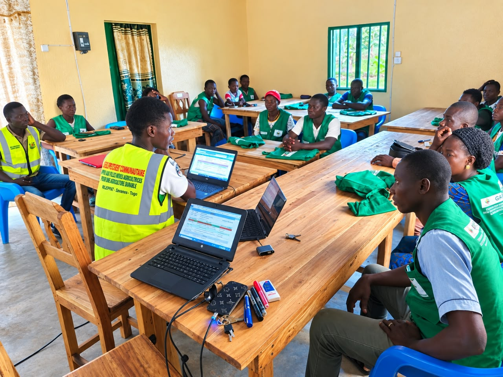
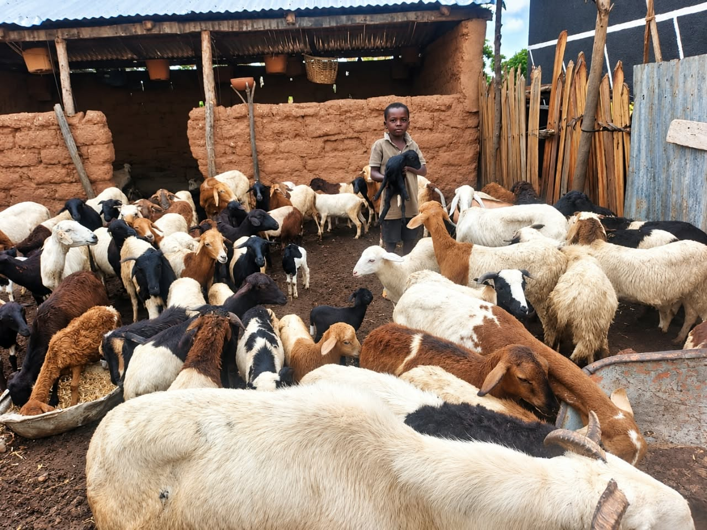
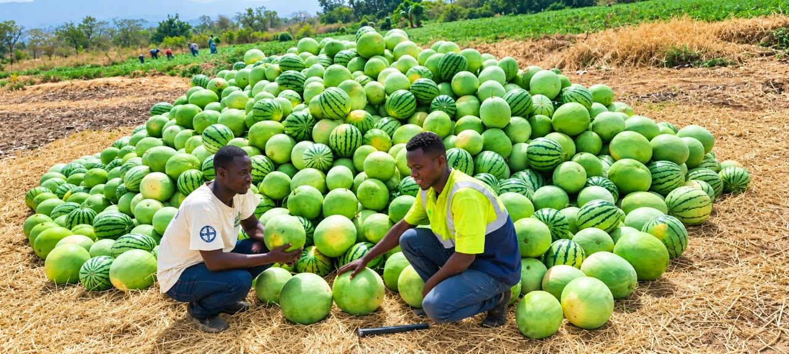
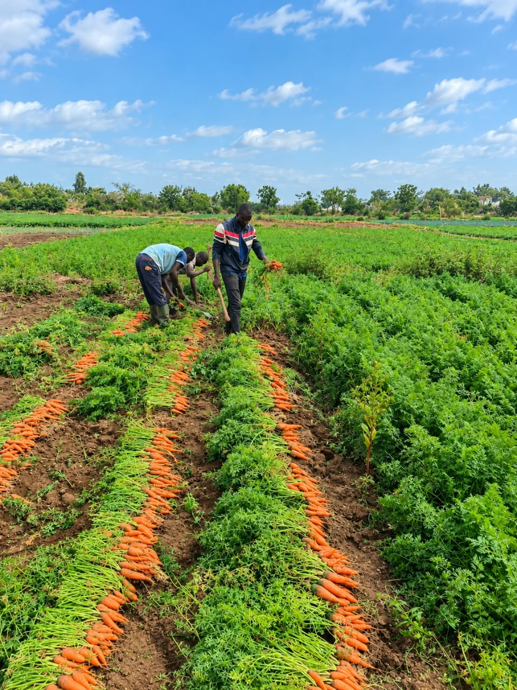
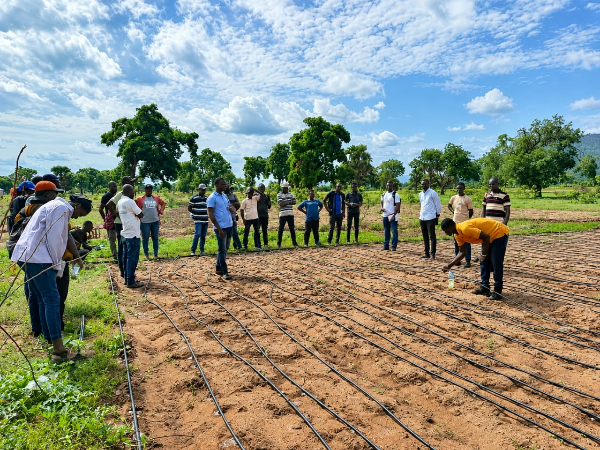
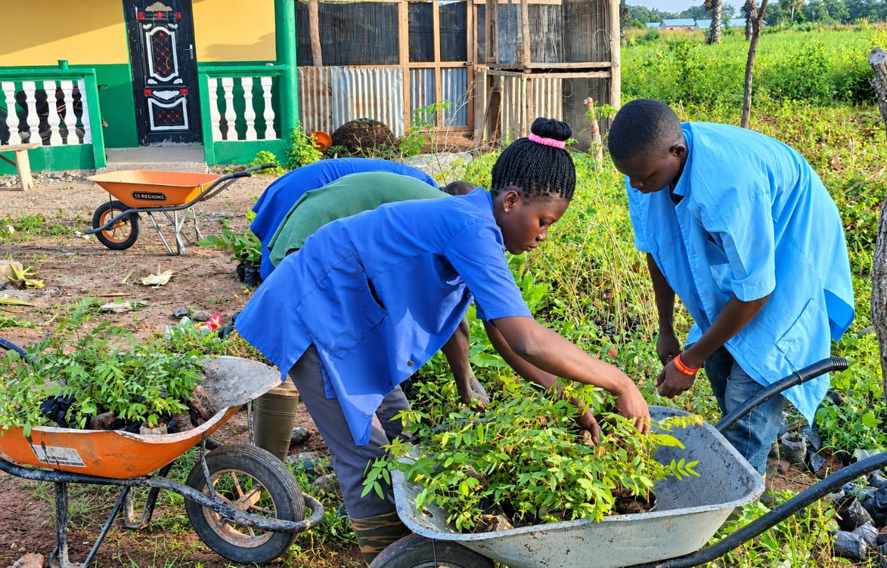

🌱
Agroécologie
Promotion des pratiques agricoles durables, protection des sols et valorisation des ressources naturelles.
Bienvenue à la Ferme École Terre Fleurie, un espace dédié à l'agroécologie, à la formation pratique et à la promotion d'une agriculture respectueuse de l'environnement.
Découvrir notre ferme Nous contacter
Créée en novembre 2022 à Tomangue, dans la commune de Tandjouaré 2, région des Savanes au Togo, la Ferme Ecole Terre Fleurie est une initiative portée par de jeunes techniciens agricoles engagés pour une agriculture durable.
Nous favorisons l'apprentissage pratique, l'innovation agricole et la valorisation des ressources locales afin de contribuer à l'autonomie des producteurs et au développement des communautés.
Des activités complémentaires pour former, produire et promouvoir des pratiques agricoles durables.
Promotion des pratiques agricoles durables, protection des sols et valorisation des ressources naturelles.

Apprentissage des techniques de production végétale et développement de cultures à valeur nutritive : Tomate, Pastèque,Oignon, Carotte,Piment,Gombo,....

Initiation aux pratiques d'élevage et à la gestion d'activités animales adaptées aux réalités locales : Volailles, Mouton, Embauche des bovins,...

Renforcement des compétences agricoles par l'apprentissage pratique et le partage d'expériences.

Appui technique et accompagnement des jeunes et des femmes dans la promotion de l’entrepreneuriat agricole, le développement des initiatives économiques et le renforcement de leur insertion professionnelle..

Valorisation des productions locales et contribution à la sécurité alimentaire des communautés.
Nous croyons en une agriculture qui nourrit les populations, protège la nature et crée des opportunités économiques.
Préserver les ressources naturelles et encourager des pratiques respectueuses de l'environnement.
Donner aux producteurs, aux jeunes et aux femmes des compétences utiles pour entreprendre.
Soutenir la création d'activités agricoles, d'emplois et de revenus durables.
Découvrez l'univers de la formation, de la production et de l'agriculture durable.



Vous souhaitez suivre une formation, collaborer avec nous ou en savoir plus sur nos activités ? Écrivez-nous.
Tomangue, commune de Tandjouaré 2,
Région des Savanes, Togo.
Voir Ferme Terre Fleurie sur Google
Ferme Ecole Terre Fleurie
Agroécologie, maraîchage, élevage, production végétale et formation agricole.
Pour une visite, une formation ou un partenariat, contactez notre équipe.